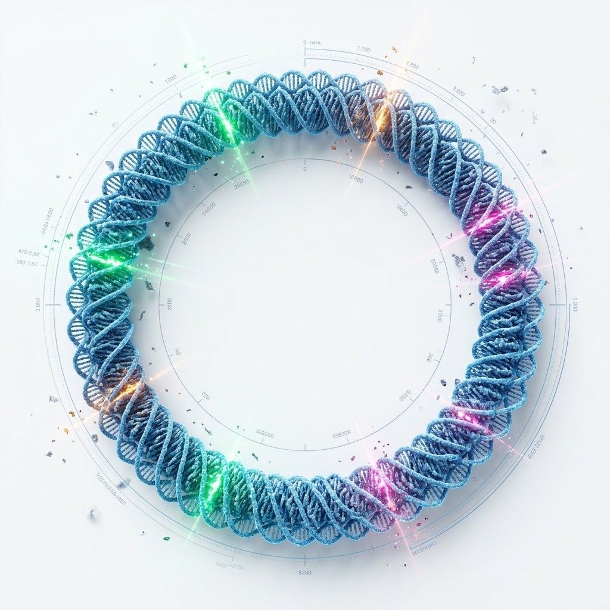
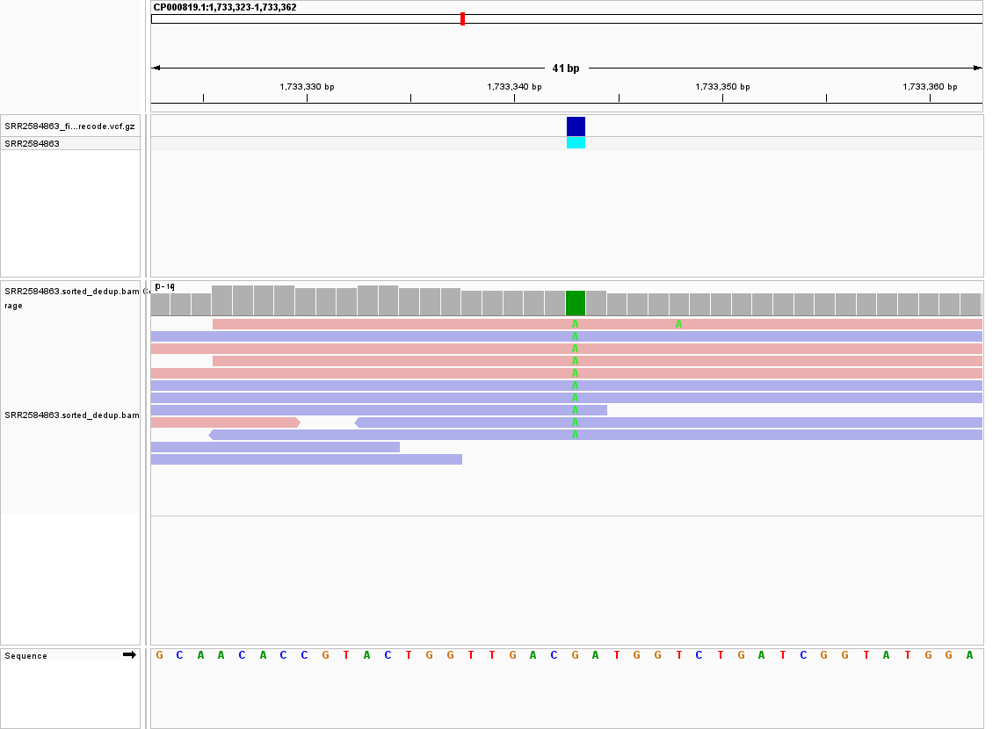
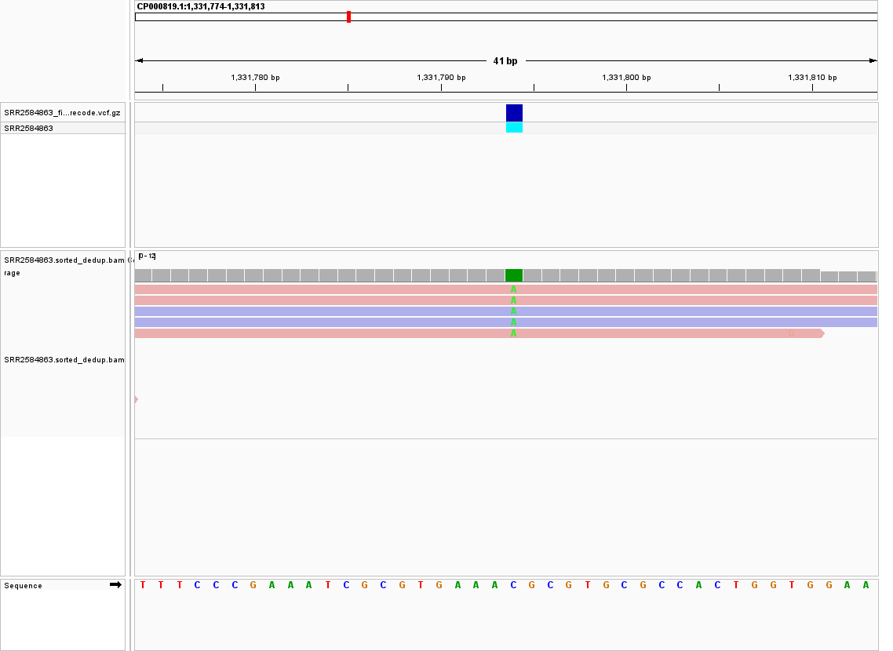
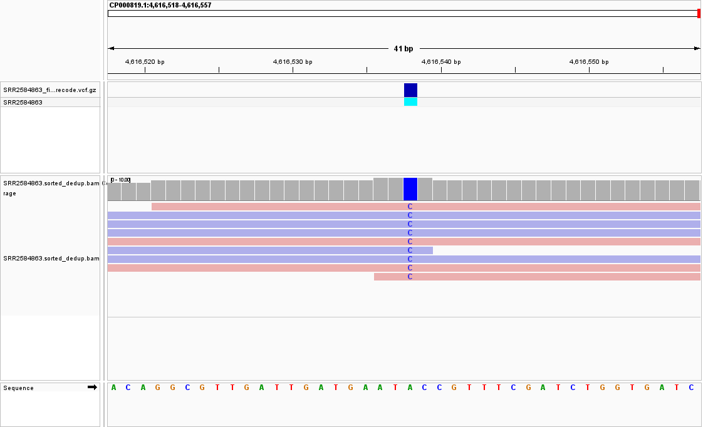

EcoVar-LTEE: High-Resolution Mutational Profiling & Systems Evolution in E. coli
An end-to-end genomic variant discovery and systems-level evolutionary investigation of Richard Lenski's landmark citrate-utilizing Long-Term Evolution Experiment lineage (Ara-3: SRR2584863).

Bioinformatics Pipeline Architecture
QC & Trimming
Evaluation with FastQC v0.11.9 followed by adapter clipping and sliding-window filtering (Q ≥ 20, min len 36) via Trimmomatic v0.39.
BWA-MEM Alignment
Pair-end sequence alignment to the ancestral chromosome of E. coli B strain REL606 (NCBI accession: CP000819.1).
PCR Deduplication
Coordinate sorting and removal of optical/PCR duplicates using Samtools rmdup to eliminate coverage depth inflation.
BCFtools Variant Calling
Genomic pileup creation and multiallelic likelihood variant calling applying a haploid bacterial genomic framework.
Phred QUAL ≥ 30 Filtering
Hard filtering in VCFtools at QUAL ≥ 30, block compression with bgzip, and positional indexing using Tabix.
IGV Visual Validation
Microscopic inspection of candidate reads colored by strand (pink forward / blue reverse) to verify consensus and rule out bias.
Master Inventory of Identified Variants (25 Calls)
| # | Position (POS) | Ref | Alt | Type | Depth (DP) | Phred QUAL | Gene & Biological Context |
|---|---|---|---|---|---|---|---|
| 1 | 154,692 | A | C | SNP | 14x | 148.0 | Regulatory intergenic region |
| 2 | 281,923 | G | T | SNP | 10x | 225.4 | Intergenic (ecpR-ykgL) |
| 3 | 648,692 | C | T | SNP | 10x | 210.4 | mrdB (RodA / Cell wall elongation) |
| 4 | 1,045,992 | A | G | SNP | 10x | 96.0 | Carbohydrate metabolic gene |
| 5 | 1,331,794 | C | A | SNP | 4x | 38.0 | topA (DNA Topoisomerase I / Supercoiling) |
| 6 | 1,733,343 | G | A | SNP | 11x | 225.4 | pykF (Pyruvate Kinase I / PTS Glycolysis) |
| 7 | 2,407,766 | A | C | SNP | 9x | 104.2 | ECB_RS23940 |
| 8 | 2,446,984 | A | C | SNP | 20x | 225.4 | ypeD (Membrane transporter permeability) |
| 9 | 2,618,472 | G | T | SNP | 12x | 32.5 | ECB_RS12910 |
| 10 | 2,665,639 | A | T | SNP | 19x | 225.4 | rplS (50S ribosomal protein L19) |
| 11 | 2,999,330 | G | A | SNP | 15x | 225.4 | Intergenic (RS14795-RS14800) |
| 12 | 3,339,313 | A | C | SNP | 10x | 211.4 | fis (Nucleoid structuring & global regulator) |
| 13 | 3,401,754 | C | A | SNP | 14x | 225.4 | rpsG (30S ribosomal protein S7) |
| 14 | 3,481,820 | A | G | SNP | 9x | 209.4 | malT (Maltose regulon activator) |
| 15 | 3,488,669 | A | C | SNP | 13x | 225.4 | ECB_RS17315 |
| 16 | 3,892,104 | C | A | SNP | 7x | 68.0 | Electron transport chain gene |
| 17 | 3,909,807 | G | T | SNP | 10x | 225.4 | Intergenic (hdfR-maoP) |
| 18 | 4,100,183 | A | G | SNP | 16x | 225.4 | hslU (Protease / Quality control component) |
| 19 | 4,201,958 | A | C | SNP | 11x | 225.4 | iclR (Glyoxylate bypass repressor) |
| 20 | 4,616,538 | A | C | SNP | 10x | 209.4 | nadR (NAD biosynthesis repressor) |
| 21 | 412,501 | A | AT | Insertion | 8x | 64.0 | Single-base insertion (intergenic) |
| 22 | 433,359 | CTTTTTTT | CTTTTTTTT | Insertion | 12x | 207.4 | Single-base insertion (lon-hupB) |
| 23 | 473,901 | CCGC | CCGCGC | Insertion | 10x | 228.4 | 2-bp insertion in ybaL |
| 24 | 730,979 | AGGCGTGG | AGG | Deletion | 12x | 49.2 | 5-bp deletion in ybgQ |
| 25 | 4,431,393 | TGG | T | Deletion | 10x | 225.4 | tamB (2-bp deletion / Outer membrane TAM) |
Four Adaptive Systems Driving LTEE Fitness
Glucose Import & Glycolysis (pykF)
The Pyruvate Kinase I missense mutation relieves allosteric feedback inhibition, maintaining elevated steady-state phosphoenolpyruvate (PEP) pools. This fuels rapid, high-affinity sugar intake via the PEP-dependent Phosphotransferase System (PTS) during nutrient pulses.
Secondary Carbon Scavenging (iclR, nadR)
Constitutive derepression of the glyoxylate bypass operon (via iclR disruption) allows direct assimilation of excreted acetate once primary glucose is exhausted. Concurrently, nadR mutations boost cellular NAD pools to sustain respiratory efficiency.
Global Supercoiling & Translation (topA, fis)
Topoisomerase I relaxation modulates chromosomal superhelical density, globally rewiring transcription across hundreds of growth-essential promoters. Substitutions in rplS and rpsG fine-tune ribosomal elongation efficiency under resource scarcity.
Cell Envelope Energy Conservation (tamB, mrdB)
The 2-bp frameshift deletion in tamB knocks out unnecessary outer-membrane protein translocation machinery, saving substantial metabolic ATP in benign flask media. Peptidoglycan remodeling via mrdB (RodA) facilitates cell volume expansion.
Microscopic IGV Evidence Validation
pykF: G → A Substitution (POS: 1,733,343)
DP: 11x
topA: C → A Transversion (POS: 1,331,794)
DP: 4x
tamB: 2-bp Deletion Indel (POS: 4,431,393)
DP: 10x
nadR: A → C Transversion (POS: 4,616,538)
DP: 10x
Submission Deliverables
All coordinate-sorted alignments, duplicate-purged BAM files, and calibrated VCF archives are formatted and verified for long-term archiving.